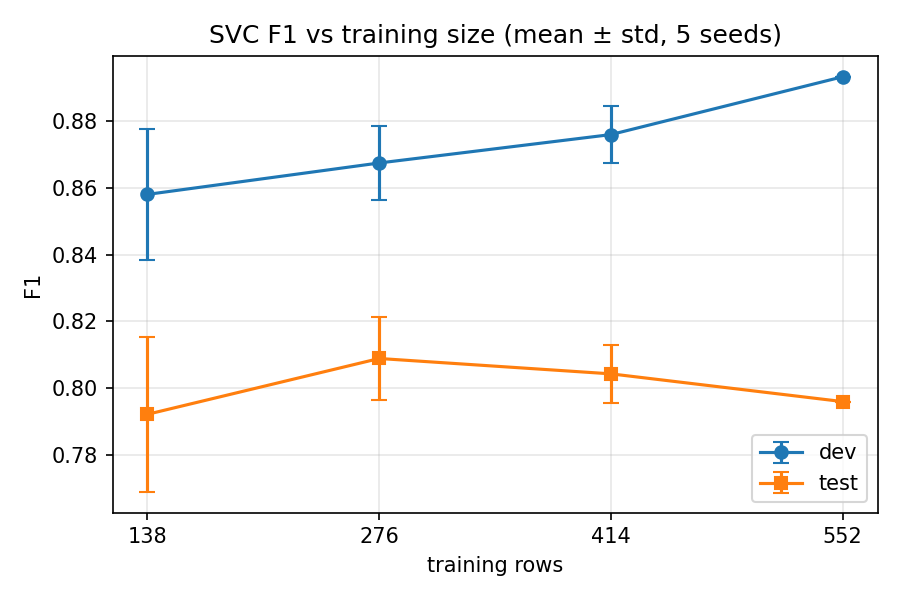

Roshkrishna K Ranjith University of Michigan–Flint, Fall 2026 Track: ARI 510 (Graduate) Code: https://github.com/LUCIFER5671/pulse-check
This report compares machine learning classifiers on a heart disease diagnosis task: predicting from clinical measurements whether a patient has heart disease. I followed the ARI 510 (graduate) track, designing the comparison protocol rather than running a fixed set of configurations.
The data is the UCI heaPrt disease dataset, comprising 920 patient records from four hospitals (Cleveland, Hungary, Switzerland, VA Long Beach) with 15 features mixing continuous clinical measurements with categorical ones. The raw target records severity on a 0 to 4 scale, which I collapsed to a binary presence/absence label; 55.3% of patients have disease. The dataset is not clean, and the cleaning decisions turned out to matter more than the choice of classifier (Section 3.1).
I compared six classifier families: logistic regression, support vector machines, k-nearest neighbours, random forests, histogram-based gradient boosting, and a stochastic gradient descent classifier. Two baselines were included throughout: a majority-class classifier and a random classifier predicting at the training-set class rate. I report accuracy, precision, recall, F1, and F2, treating F1 as decisive for reasons set out in Section 3.4.
I hypothesized that Random Forest would achieve the highest F1. The feature space mixes categorical variables (chest pain type, thal, slope) with continuous ones (age, cholesterol, maximum heart rate), and I expected clinically plausible nonlinear interactions: the significance of a given maximum heart rate should depend on the patient's age. Tree ensembles capture such interactions without manual feature engineering, need no feature scaling, and tolerate the heavy missingness in this data (66% for ca, 53% for thal). I expected logistic regression to trail, since it fits only a linear boundary in the encoded space. Given n=920, I expected any margin to be modest; ensembles generally need more data to separate from simpler models.
This hypothesis was formed after reviewing the lecture material and an initial inspection of the data, before any models were run.
The dataset contains 920 patients and 15 features. The raw target num records severity on a 0 to 4 scale; following the binary framing of the task, I collapsed it to disease present (num > 0) versus absent, giving 509 positive and 411 negative cases (55.3% positive).
Initial inspection revealed that missing values are not confined to the columns pandas reports as null. 172 rows record a serum cholesterol of 0 and one records a resting blood pressure of 0, both physiologically impossible, and both sentinel encodings for "not measured." Left untreated, these are read as genuine measurements and distort the feature. I converted both to NaN before any imputation, which raised the missing rate for chol from 3.3% to 22.0% (202 of 920 rows).
The columns fbs and exang load as booleans with missing entries. I mapped these to 1/0 while preserving NaN, so that "not recorded" remains distinct from "false" rather than collapsing into the negative class.
Missingness in this dataset is substantial and highly structured: ca is 66.4% missing, thal 52.8%, and slope 33.6%. Crucially, these rates vary by source hospital; ca is 2% missing at Cleveland but 99% missing at Hungary and VA Long Beach. Since the hospitals also differ sharply in disease prevalence (36.2% at Hungary against 93.5% at Switzerland), the pattern of missingness carries information about the label. I therefore retained missingness indicators rather than discarding this signal, and return to its consequences in the error analysis (Section 5).
I dropped the dataset column, which records the source hospital, from the default feature set. It is a confounder rather than a clinical variable: a model can improve its score by inferring which hospital a patient came from instead of assessing the patient. An ablation measuring what this costs is reported in Section 4.
All preprocessing, meaning imputation, scaling, and one-hot encoding, is implemented as a ColumnTransformer inside a scikit-learn Pipeline, so that every transformer is fit on training data only and applied unchanged to dev and test.
This departs from the provided starter notebook, which calls X.fillna(X.median()) and pd.get_dummies(X) on the complete frame before splitting. Doing so computes imputation values from all 920 patients, including those later assigned to dev and test, so information from the held-out sets influences the training data. The effect on a dataset this clean is likely small, but the practice invalidates the held-out sets as estimates of performance on unseen data, which is the entire reason for holding them out.
I used a stratified 60/20/20 split into train (552), dev (184), and test (184), with stratification preserving the 55.3% positive rate in all three sets. Model selection and hyperparameter search were conducted entirely on the dev set. The test set was evaluated once, after the final configurations were fixed; no result from it was used to revise any choice.
I report accuracy, precision, recall, and F1 throughout, and initially intended F2 as the decisive metric. The reasoning was clinical: in a screening task, a false negative (a patient with disease sent home) carries a higher cost than a false positive (an unnecessary follow-up test), and F2 weights recall above precision accordingly.
Testing this choice against the baselines showed it to be unworkable. The majority-class baseline, which predicts "disease" for every patient, achieves an F2 of 0.8615 on the dev set, while a tuned logistic regression achieves 0.8743. A gap of 0.013 separates a real model from a classifier that examines no features at all. The cause is structural: this dataset has a positive majority, so the constant positive classifier attains perfect recall by construction, and F2's emphasis on recall rewards precisely that degeneracy.
I therefore adopted F1 as the decisive metric. On the same comparison, F1 gives 0.7133 for the majority baseline against 0.8768 for logistic regression, a gap of 0.164 that discriminates. The clinical asymmetry is retained as a secondary criterion: among configurations whose F1 differences fall within noise, I prefer the higher recall. All five metrics are reported for every configuration so the trade-off remains visible.
I note that this decision was made before any test-set evaluation, on the basis of baseline behaviour alone. The fact that the majority baseline still outperforms the final model on F2 at test time is taken up in Section 6; it is a consequence of the metric's structure, not a reason to revisit the choice after the fact.
I compared six classifier families: logistic regression, support vector machines, k-nearest neighbours, random forests, histogram-based gradient boosting, and a stochastic gradient descent classifier. The search covered 88 configurations in total, with grids given in Table 1. Every configuration was trained on the train split and scored on dev.
Two baselines were included, as required: a majority-class classifier, and a random classifier that predicts at the training-set class rate. The latter was computed analytically over 10,000 simulated prediction sets and validated against scikit-learn's per-draw metrics on 200 draws, matching to four decimal places.
Table 1 gives the best configuration for each classifier family, selected by F1 on the dev set, together with the two baselines. The full table of all 88 configurations is in results/dev_results.csv.
Table 1. Best dev-set configuration per model family.
| Model | Best configuration | Acc | Prec | Rec | F1 | F2 |
|---|---|---|---|---|---|---|
| SVM | RBF, C=1, gamma=scale, balanced | 0.880 | 0.885 | 0.902 | 0.893 | 0.898 |
| Random Forest | depth=None, leaf=1, balanced | 0.875 | 0.884 | 0.892 | 0.888 | 0.890 |
| Logistic Regression | C=0.1, balanced | 0.870 | 0.890 | 0.873 | 0.881 | 0.876 |
| SGD | log_loss, alpha=0.01, balanced | 0.870 | 0.890 | 0.873 | 0.881 | 0.876 |
| k-NN | k=11, uniform | 0.864 | 0.867 | 0.892 | 0.879 | 0.887 |
| HistGradientBoosting | lr=0.05, depth=3 | 0.864 | 0.881 | 0.873 | 0.877 | 0.874 |
| Majority baseline | always predict disease | 0.554 | 0.554 | 1.000 | 0.713 | 0.862 |
| Random baseline | predict at class rate | 0.506 | 0.554 | 0.552 | 0.552 | 0.552 |
Every model comfortably beats both baselines on F1. The six models, however, span only 0.016 F1 between first and last. With 184 dev examples, a single changed prediction moves F1 by roughly 0.005, so the gap between the best and worst model is on the order of three patients. The dev set cannot support a ranking at this resolution.
The SGD classifier ties logistic regression exactly on all five metrics. This is expected rather than coincidental: with log_loss, SGDClassifier fits the same logistic regression model by a different optimizer, and on a problem this small both converge to effectively the same decision boundary.
Because the dev set could not separate the models, I ran repeated stratified cross-validation (5 folds, 6 repeats, 30 fits) on the training split only, using identical folds for every model so the per-fold differences could be paired. The dev and test sets were not touched.
Table 2. Repeated cross-validation on the training split (n=552, 30 folds).
| Model | CV F1 (mean ± std) | Paired diff from SVM (mean / std) | Separable? |
|---|---|---|---|
| SVM | 0.8362 ± 0.0284 | — | — |
| k-NN | 0.8287 ± 0.0295 | 0.0075 / 0.0189 | No |
| HistGradientBoosting | 0.8287 ± 0.0296 | 0.0075 / 0.0247 | No |
| Logistic Regression | 0.8266 ± 0.0288 | 0.0096 / 0.0173 | No |
| Random Forest | 0.8241 ± 0.0299 | 0.0121 / 0.0233 | No |
| SGD | 0.8205 ± 0.0331 | 0.0157 / 0.0224 | No |
| Majority baseline | 0.7118 ± 0.0021 | 0.1244 / 0.0286 | Yes |
For every pair, the mean advantage of the SVM is smaller than the fold-to-fold standard deviation of that same difference. Only the majority baseline separates. The two ranking procedures also disagree with each other: Random Forest placed second on dev and last in cross-validation, which is itself evidence that the differences between models are not real.
The SVM was carried forward to the test set as the model that ranked first under both procedures. This was a pre-stated tie-breaking rule, not a preference formed after the fact; logistic regression would have been an equally defensible choice, and Section 6 returns to this.
The test set was evaluated once, with the configuration fixed.
Table 3. Final test-set performance (n=184).
| Model | Acc | Prec | Rec | F1 | F2 |
|---|---|---|---|---|---|
| SVM (RBF, C=1, balanced) | 0.777 | 0.808 | 0.784 | 0.796 | 0.789 |
| Majority baseline | 0.554 | 0.554 | 1.000 | 0.713 | 0.862 |
| Random baseline | 0.505 | 0.554 | 0.552 | 0.552 | 0.552 |
Test F1 of 0.796 sits below both the dev estimate (0.893) and the cross-validation estimate (0.836 ± 0.028), a little over one standard deviation below the latter. Section 6 discusses why the cross-validation figure is the more trustworthy estimate of generalization.
Note that the majority baseline still exceeds the final model on F2 (0.862 against 0.789), for exactly the structural reason set out in Section 3.4.
I retrained the chosen configuration on 25%, 50%, 75%, and 100% of the training split (stratified subsamples, five seeds per size, dev and test held fixed) and scored each on both dev and test.
Table 4. F1 against training-set size, averaged over five seeds.
| Training rows | Dev F1 | Test F1 |
|---|---|---|
| 138 (25%) | 0.858 | 0.792 |
| 276 (50%) | 0.867 | 0.809 |
| 414 (75%) | 0.876 | 0.804 |
| 552 (100%) | 0.893 | 0.796 |

Figure 1. Dev and test F1 as a function of training-set size. Error bars show the standard deviation across five stratified subsamples; the deviation is zero at 100% because all seeds use the full training set and the SVM is deterministic.
Dev F1 rises steadily with training size, from 0.858 to 0.893. Test F1 is flat within noise across the whole range, varying between 0.792 and 0.809 with no trend. On the test set, additional data beyond roughly 276 examples did not improve performance.
The gap between the two curves is constant at every training size, which indicates that the dev/test difference is a property of the splits rather than an artifact of any particular fit.
As an additional ablation, I refit the chosen configuration with the source hospital column retained rather than dropped.
Table 5. Effect of retaining the source hospital column.
dataset column |
Features | Test F1 | Test accuracy |
|---|---|---|---|
| Dropped | 27 | 0.796 | 0.777 |
| Kept | 31 | 0.816 | 0.799 |
Keeping the site column improves test F1 by 0.020, roughly four patients out of 184. This reverses the direction seen earlier on dev. The result is reported as an observation only: it was measured on the test set, and using it to choose a configuration would convert the test set into a second development set and invalidate the final estimate. Settling the question properly would require the same paired cross-validation procedure as Section 4.2, run on the training data alone. Section 5 shows in any case that dropping the column does not produce a site-independent model.
The final model makes 41 errors on the 184 test patients: 22 false negatives (disease missed) and 19 false positives (disease predicted where none is present). The breakdowns below use the original, pre-preprocessing feature values, and are saved in results/errors.csv.
The clearest pattern concerns the sentinel-zero cholesterol values identified in Section 3.1. Of the 42 test patients whose cholesterol was recorded as 0, the model produces no false negatives at all and 7 false positives, an error rate of 16.7%. Patients with a measured cholesterol value have an error rate of 24.1%. The model is therefore more accurate on the group whose data is missing.
This behaviour is not arbitrary. 81% of test patients with missing cholesterol have heart disease, against 48% of the remainder. The model has learned, through the missingness indicator, that an unmeasured cholesterol value predicts disease, and on this data that inference is correct.
It is also not clinical. Cholesterol is missing because of where the patient was seen: all 123 Switzerland records and 49 of the VA Long Beach records carry the sentinel value, and those two hospitals have disease rates of 93.5% and 74.5% respectively. What the model has actually learned is which hospital the patient came from.
This has a direct consequence for the design decision in Section 3.1. Dropping the dataset column does not produce a site-independent model, because the same information re-enters through the pattern of missing values. Site information cannot be removed by deleting a single column; it is distributed across the missingness structure of the entire feature set. That the leak improves measured performance is precisely what makes it dangerous: a model of this kind would score well here and fail at a new clinic with different testing practices, since the correlation it relies on is a property of the data collection process rather than of the patients.
The same effect appears directly in the site breakdown of the errors. 12 of the 22 false negatives are Cleveland patients, and 10 of the 19 false positives are VA Long Beach patients. Cleveland has the second-lowest disease prevalence in the dataset (45.7%) and VA Long Beach the second-highest (74.5%).
The model is therefore pulled toward each site's base rate: it under-predicts disease at low-prevalence sites and over-predicts it at high-prevalence sites. Both error types are concentrated where that prior disagrees with the individual patient.
The error rate rises consistently with patient age: 12.5% in the thirties, 19.4% in the forties, 19.7% in the fifties, and 31.9% in the sixties. (The seventies bucket shows 40%, but contains only 5 patients and should not be read as part of the trend.)
This is the expected direction. In younger patients the absence of disease is the strong prior and is easy to predict, whereas in older patients both outcomes are plausible and the decision depends on finer distinctions between the clinical features.
Error rates are effectively equal for male and female patients (22.2% and 22.5%), giving no evidence of a sex-linked failure mode at this sample size.
Among chest pain categories, the highest error rate is for typical angina at 42.9%, but this rests on only 7 test patients and cannot be distinguished from noise. The model over-predicts disease in patients whose chest pain is not characteristically cardiac. For a screening application this is the less costly direction of error, since a false positive leads to a further test rather than a missed diagnosis. It does suggest, though, that the model is not reading chest pain type as strongly diagnostic on its own.
The dominant failure mode is not a weakness of the classifier but a property of the dataset. The strongest signal available to any model here is hospital identity, which correlates with the label far more strongly than most clinical variables, and which survives the removal of the column that names it. Improving the score on this data and building a model that generalizes to a new clinical setting are, to a substantial degree, different objectives.
I treated F1 as decisive, with recall as a tiebreaker among configurations whose F1 differences fell within noise. My first instinct was F2, on the clinical argument that a missed diagnosis costs more than a false alarm, but comparing against the baselines showed it could not do the job: F2 scored the majority-class classifier at 0.8615 against 0.8743 for a tuned logistic regression. A metric that nearly ranks a constant classifier alongside a real model is not measuring what I wanted. The cause is structural, since a positive-majority dataset lets the all-positive classifier attain perfect recall by construction. F1 puts the same comparison at 0.7133 against 0.8768.
This survives to the test set: the majority baseline still beats the final model on test F2 (0.862 against 0.789). Had I kept F2, my conclusion would have been that no model beats predicting disease for everyone, which would have been an artifact of the metric.
I predicted Random Forest would achieve the highest F1. It finished last of six in cross-validation (0.8241 against the SVM's 0.8362). More importantly, the framing was wrong: I expected a ranking to exist, and no pair of models is separable. The six span 0.0121 F1 in total, and the two ranking procedures disagree with each other, with Random Forest placing second on dev and last in cross-validation.
I had expected the feature space to reward a model capturing nonlinear interactions. Either those interactions are weak, or 552 examples are too few to identify them. Two observations point the same way: the winning configurations were the regularized ones (logistic regression at C=0.1, the SVM at C=1), and the SGD classifier with log loss reproduced logistic regression's metrics exactly, as expected given it fits the same model by a different optimizer. On this dataset, at this sample size, the choice among these six families matters less than how the data is cleaned.
Dev F1 rises steadily with training size, from 0.858 at 138 examples to 0.893 at 552. Test F1 does not: it moves between 0.792 and 0.809 with no trend, and the value at 552 (0.796) is no better than at 138 (0.792). On the test set, additional data beyond roughly 276 examples bought nothing. Combined with Section 6.2, most of the achievable performance here is reached early, and the remaining errors are not the kind more examples would fix. The constant gap between the two curves indicates that the dev/test difference is a property of the splits rather than of any particular fit.
The three estimates are 0.893 on dev, 0.836 ± 0.028 in cross-validation, and 0.796 on test. The dev figure is optimistic by construction: each configuration was selected as the best of up to 30 candidates on the same 184 examples, so it absorbs whatever noise that split happened to favour. The cross-validation figure averages 30 folds on training data alone, with no configuration selected on those folds, making it the most trustworthy estimate. The test figure sits a little over one standard deviation below it, unremarkable for a single 184-row sample. Had I selected configurations on the test set, I would have reported something near 0.89 and believed it.
The separability test in Section 4.2 is a heuristic, not a statistical test: cross-validation folds share training data, so the per-fold differences are not independent and no p-value should be attached.
The site ablation is unresolved. Keeping the source hospital column improves test F1 by 0.020, contradicting the dev result. I did not switch on this, because choosing a configuration from a test-set result converts that set into a second development set. Settling it would require the paired cross-validation of Section 4.2 run on training data alone.
The SVM's selection rests on a tie the data cannot break. It ranked first under both procedures, which was the rule set in advance, but logistic regression would have been equally defensible and is more interpretable. The test result should be read as the performance of one member of a group of indistinguishable models.
I expected the classifier comparison to be the substance of the work and the cleaning to be preliminary. It was the reverse: the six classifiers are indistinguishable, while the discovery that 172 cholesterol values were sentinel zeros, and that their absence encodes hospital identity, changed how the whole result should be read. Those zeros were the harder of the two challenges to catch, since they are invisible to isna() and appear in the data as ordinary numbers; I found them by inspecting per-site distributions, where Switzerland showed a mean cholesterol of exactly zero.
The second difficulty was accepting that the comparison had no winner. The natural response to six models within 0.016 F1 is to search harder for the real ordering; the correct response was to test whether one existed. Reporting "no separable difference" felt weaker than naming a winner, but it required treating the absence of a difference as a finding rather than a failure to find one.
I used generative AI on this assignment. The table below documents its use by phase.
| Phase | Used AI? | How (mode + what I asked) | How I checked / corrected / overrode it |
|---|---|---|---|
| Planning & understanding | Yes | Information and Advice / feedback. I used Claude (chat interface) to profile the raw dataset before deciding on an approach, asking what the missingness structure looked like and whether any columns were problematic. I asked whether F2 was the right decisive metric for a medical screening task, and later asked it to review the metric choice against the baseline results. | The profiling output was verified directly: I re-ran the missingness counts and the per-site cholesterol distributions myself and confirmed the 172 sentinel zeros and the per-hospital missingness rates. On the metric question, I overrode the initial F2 recommendation after computing the baseline scores myself and finding that F2 ranked the majority-class classifier within 0.013 of a real model. The switch to F1 was my decision, made on my own numbers. |
| Coding and Debugging | Yes | Creation. I used Claude Code in VS Code to write the project's Python modules from specifications I wrote: the cleaning and pipeline layer (data.py), the metric helpers and baselines (evaluate.py), the dev-set comparison (experiments.py), the repeated cross-validation (confirm.py), and the final test evaluation with ablations and error analysis (final.py). I specified the cleaning rules, the hyperparameter grids, the split protocol, and the requirement that all preprocessing sit inside the Pipeline. |
I verified the outputs against hand-checked values: the post-sentinel-fix missing count (172 + 30 = 202, 22.0%), the split sizes (552/184/184), and the class balance in each split. I checked that no file other than final.py touched the test set. Claude Code flagged two issues I then decided on myself: that the categorical imputer was discarding the fbs/exang missingness signal, which I chose to fix for consistency with the numeric columns, and that the vectorized random baseline needed validation, which was then checked against scikit-learn on 200 draws. |
| Analysis & interpretation | Yes | Advice / feedback. I discussed the results as they came in: whether a 0.016 F1 spread across six models supported a ranking, how to interpret the gap between the dev, cross-validation, and test estimates, and what the concentration of errors among sentinel-cholesterol patients implied. | The decision to run repeated cross-validation came from the observation that the dev spread was about three patients wide, which I confirmed by computing the per-prediction sensitivity of F1 on a 184-row set. I rejected the suggestion to reconsider the metric after seeing that the majority baseline beat the final model on test F2, on the grounds that changing a pre-registered metric on test-set evidence would invalidate the estimate. I also declined to adopt the site-retaining configuration despite its better test F1, for the same reason. Both judgments are recorded in Sections 6.1 and 6.5. |
| Report writing, formatting, editing | Yes | Creation and Advice / feedback. I asked for drafts of several report sections based on my own results and the decisions I had already made, then rewrote them in my language using Gramamrly AI. I also asked for feedback on my hypothesis paragraph, which I had drafted first. | Every number in the report was checked against the generated CSV files in results/. I corrected the draft hypothesis, which had been written to include reasoning I had not actually used, so that it reflects what I genuinely expected and why. I cut material from the drafted Discussion that overstated conclusions the data did not support. Section structure, cross-references,Draft Reworks and all interpretive claims are my own. |